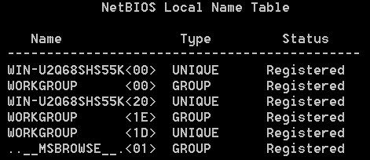

NetBIOS Name Service (UDP:137)
NetBIOS Name Service(
NBNS) run on UDP
port 137, it serves the same purpose as DNS does: translate human-readable names to IP addresses. While NBNS
resolves names in the NetBIOS namespace, DNS resolves names in the DNS domain namespace
Windows Internet Name
Service (
WINS) is the Microsoft implementation of NetBIOS Name Server
(
NBNS).
A NetBIOS name is a 16 byte(characters) address that identify a NetBIOS resource
on the network. Names can be registered as unique names or as group names(
https://tools.ietf.org/html/rfc1002 for more)
The firsts 15
characters can be specified by the user, while the 16th character is a hexadecimal value that indicate the resource
type.
◇
Unique Names
| 16th Byte |
Description |
| 00 |
workstation service (workstation name) |
| 03 |
messenger service |
| 06 |
RAS server service |
| 1B |
domain master browser |
| 1F |
NetDDE service |
| 20 |
server service |
| 21 |
RAS cient service |
| BE |
network monitor agent |
| BF |
network monitor application |
◇
Group Names
| 16th Byte |
Description |
| 00 |
workstation service (workgroup/domain name) |
| 1C |
domain group |
| 1D |
master browser |
| 1E |
normal group |
| _MSBROWSE_ |
domain master |
nbtstat -n #NetBIOS names on our local machine

Bibliography
NetBIOS name RFC:
https://tools.ietf.org/html/rfc1002NetBIOS Suffix
Definitions:
https://docs.microsoft.com/en-us/openspecs/windows_protocols/ms-brws/0c773bdd-78e2-4d8b-8b3d-b7506849847b?redirectedfrom=MSDNWINS
definition:
https://docs.microsoft.com/en-us/previous-versions/windows/it-pro/windows-server-2003/cc784707(v=ws.10)?redirectedfrom=MSDNWINS
overview:
https://docs.microsoft.com/en-us/previous-versions/windows/it-pro/windows-server-2008-R2-and-2008/cc725802(v=ws.11)?redirectedfrom=MSDN